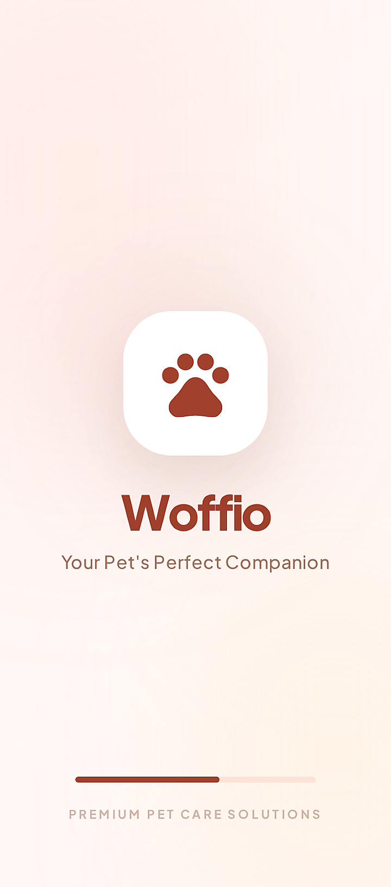
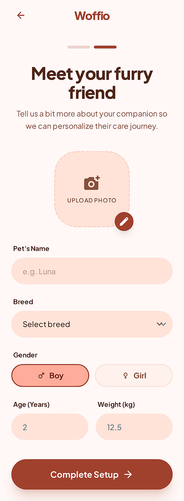
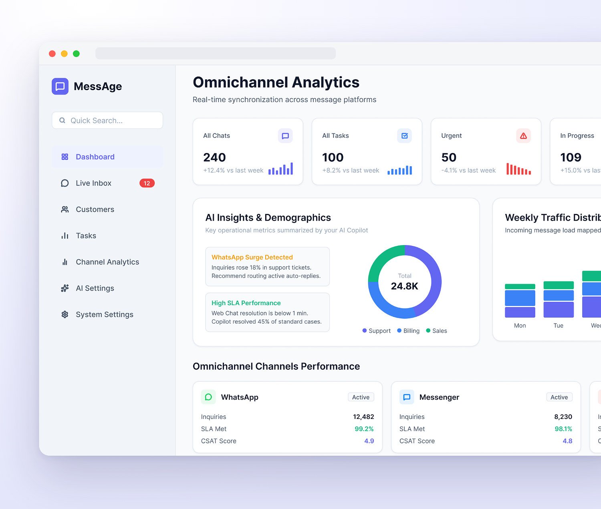
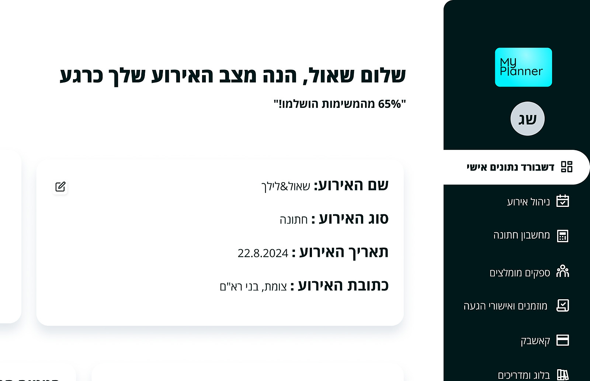

Live · Paid


Real product · in the market
View the full case study
Meashrim in Click
RSVP, seating and gifting in one system for couples — I characterized, built and launched it on my own, and real customers pay a subscription to use it.
486Registered users
5.0★App Store rating
PayingSubscribers
Case study


Concept · projected impact
View the full case study
All-in-One Dog Care Platform
From vet tracking to dog-walker booking — one platform families can trust, replacing the handful of apps dog owners juggle today.
85%Fewer missed vet visits
4+Apps replaced
6 wksEnd-to-end
Case study

Concept · projected impact
View the full case study
AI Messaging for Solo Professionals
An AI platform that answers leads across WhatsApp, Instagram and email — turning missed messages into booked work.
73%Faster lead response
30%Leads lost today
12User interviews
Real product

Real product · built and run by me
View the full case study
Smart Wedding Planning Platform
AI-powered event management — budget tracking, suppliers and cashback in one place, replacing the ₪8,000+ human planner.
₪8K+Planner cost replaced
73%Couples over budget
12User interviews